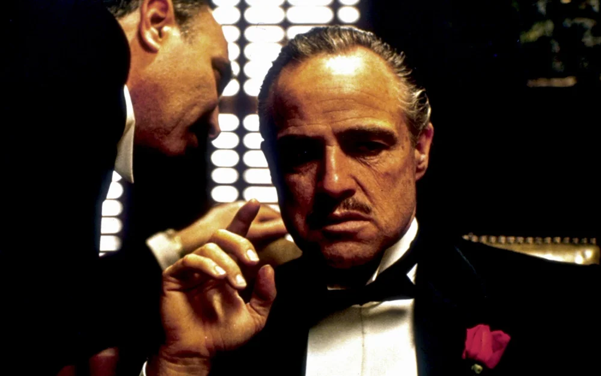

THE GUARDIAN /
FILM INDUSTRY / REPORTING & REVIEWS
Film News.
Recent film headlines from The Guardian. Open a headline to read the original article.

Image: Park Circus
Source: The Guardian · Film
Feed checked: 19 Nov 2026, 16:10 UTC
Latest saved headlines, not a live feed.
Articles may require registration or a subscription.
THE GUARDIAN /
The best and worst Bond films: ranked by critics and box office
Read at The Guardian ↗THE GUARDIAN /
Robert Pattinson to apply for 90,000 more jobs? UK government trolls James Bond actor
Read at The Guardian ↗THE GUARDIAN /
‘Perhaps we are safer not knowing’: a year after his death, Rob Reiner’s JFK assassination book is revealed
Read at The Guardian ↗THE GUARDIAN /
You Can See Everything review – unblinking, unhinged and unmissable
Read at The Guardian ↗THE GUARDIAN /
‘Sam-Bankman Fried messaged me from prison’: rising star Anthony Boyle on playing the disgraced tech bro – and a zero-hours bike courier
Read at The Guardian ↗THE GUARDIAN /
Guarding Stars review – Leighton Meester is a delight in fizzy Netflix holiday romance
Read at The Guardian ↗THE GUARDIAN /
Madden review – Nicolas Cage is a cartoonish NFL legend in David O Russell’s stinker
Read at The Guardian ↗THE GUARDIAN /
Bond role was ‘Josh O’Connor’s to lose’ but actor pulled out of the running, report suggests
Read at The Guardian ↗THE GUARDIAN /
Josephine review – Channing Tatum and Gemma Chan ballast knotty drama about a child witness to a rape
Read at The Guardian ↗THE GUARDIAN /
Your Mother Your Mother Your Mother review – Mahershala Ali’s religious hitman on the hunt for baby milk
Read at The Guardian ↗THE GUARDIAN /
‘The aesthetics in my family were so high, I felt ugly’: Charlotte Gainsbourg on extremism, abortion and her mother, Jane Birkin
Read at The Guardian ↗Headlines supplied by The Guardian Film RSS feed. Reporting remains with the original publisher. FRAME No. 1 is not affiliated with The Guardian.